7. 残高を送る・受け取る
スマホ決済では、お店への支払いだけでなく、他の利用者との間で残高をやり取りすることもできます。
7.1 他の利用者に残高を送る
家族や友人など、スマホ決済を利用している相手に残高を送ることができます。
店舗で商品やサービスの代金を支払う場合とは異なり、「送る」では、スマホ決済を使っている人を相手として操作を行います。
ホーム画面から「送る」を選ぶと、送る相手を指定する方法が表示されます。
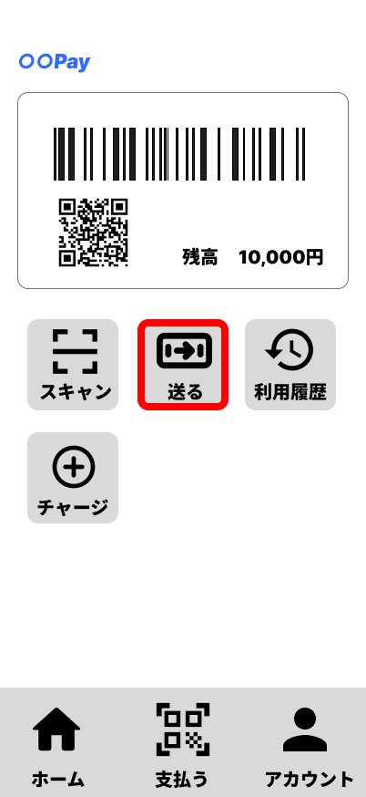
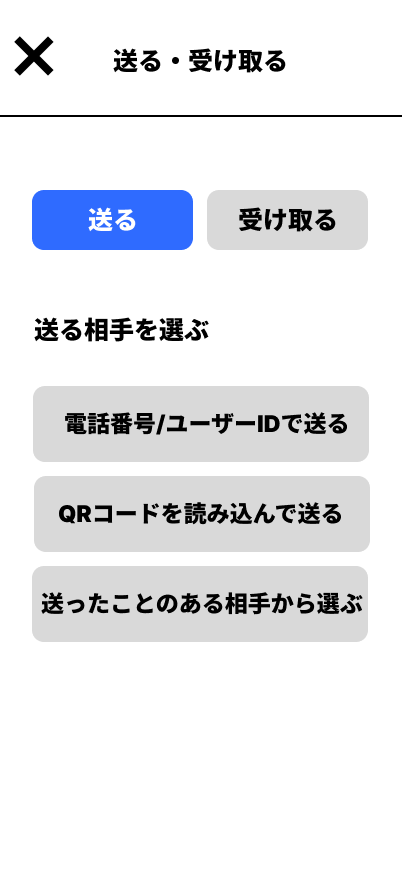
送り先を決める方法には、電話番号やユーザーIDを入力する方法、QRコードを読み取る方法、これまでに送ったことのある相手から選ぶ方法があります。
電話番号やユーザーIDから相手を指定する
「電話番号／ユーザーIDで送る」を選ぶと、相手の電話番号またはユーザーIDを入力する画面が表示されます。
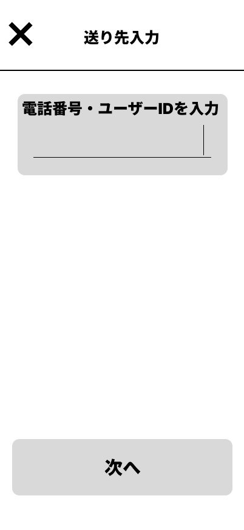
相手を指定して「次へ」を選ぶと、その相手に送る金額を入力する画面へ進みます。
QRコードを読み取って相手を指定する
「QRコードを読み取って送る」を選ぶと、QRコードを読み取るための画面が表示されます。
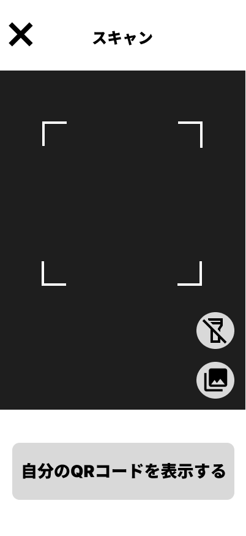
相手のQRコードを読み取ると、通常はその相手に送る金額を入力する画面へ進みます。
相手があらかじめ受け取る金額を指定している場合には、その金額が表示された確認画面へ進みます。
これまでに送ったことのある相手から選ぶ
「送ったことのある相手から選ぶ」を選ぶと、これまでに送ったことのある相手が一覧で表示されます。
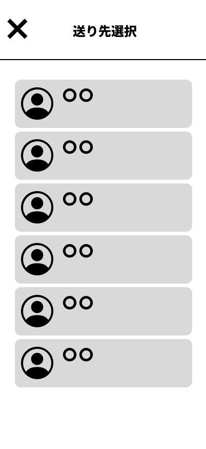
送りたい相手を選ぶと、その相手に送る金額を入力する画面へ進みます。
このように、送り先を決める方法はいくつかあります。いずれかの方法で送り先を決めた後は、送る金額を入力し、相手と金額を確認して送金を行います。
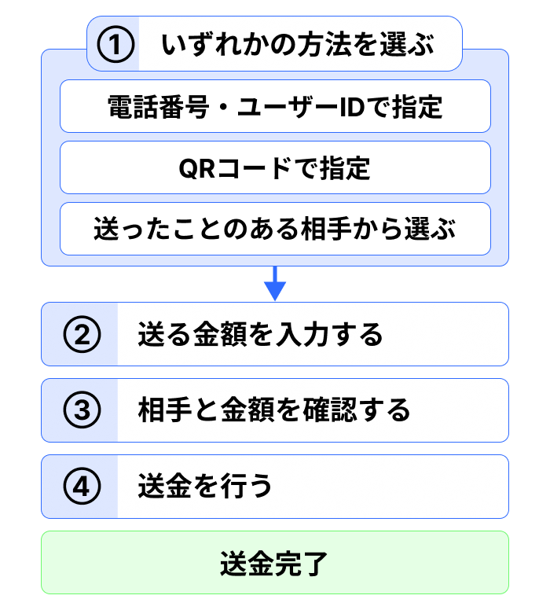
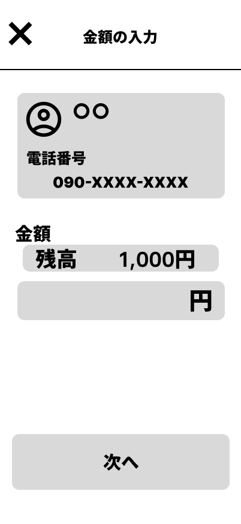
ここからは、900円を送る場合を例に操作を見ていきます。
送る金額として900円を入力します。
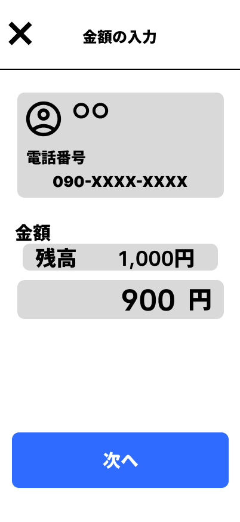
「次へ」を選ぶと、送り先と送る金額を確認する画面へ進みます。
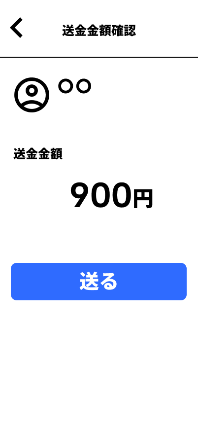
内容を確認して「送る」を選ぶと、相手への送金が行われます。
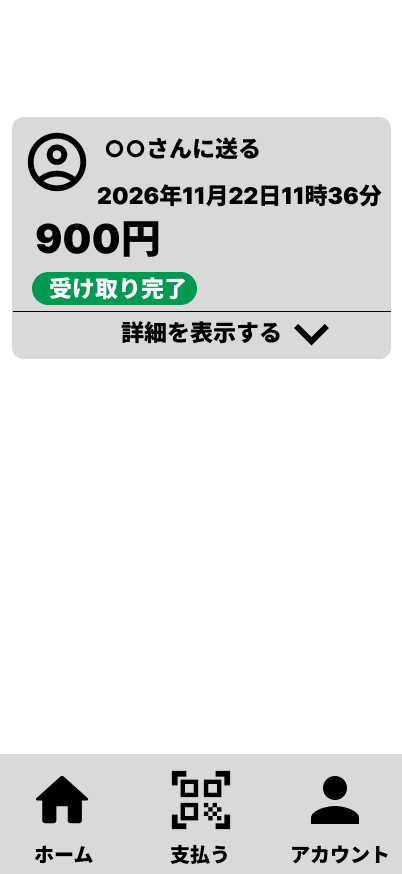
相手が残高の受け取りを完了した後は、その送金を取り消して、送った金額を自分の残高に戻すことはできません。送金を行う前に、送り先や金額を確認します。
残高を送ると、送った金額の分だけ自分の残高が少なくなります。
たとえば、残高が2,000円のときに900円を送った場合には、その後の残高は1,100円になります。
送ろうとする金額に対して残高が足りない場合には、そのまま操作を完了することはできません。その場合には、必要に応じて先に残高を増やします。
また、送った内容は、送金後の画面や利用履歴から確認できます。
7.2 他の利用者から残高を受け取る
他の利用者から残高を受け取ることもできます。
ホーム画面から「送る」を選び、その後「受け取る」のタブを選ぶと、受け取りに関する操作が表示されます。
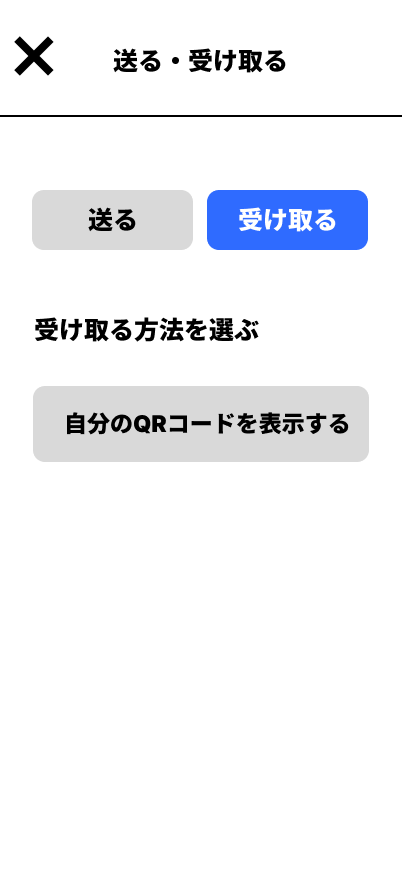
自分のQRコードを表示し、そのQRコードを相手に読み取ってもらうことで残高を受け取ることができます。
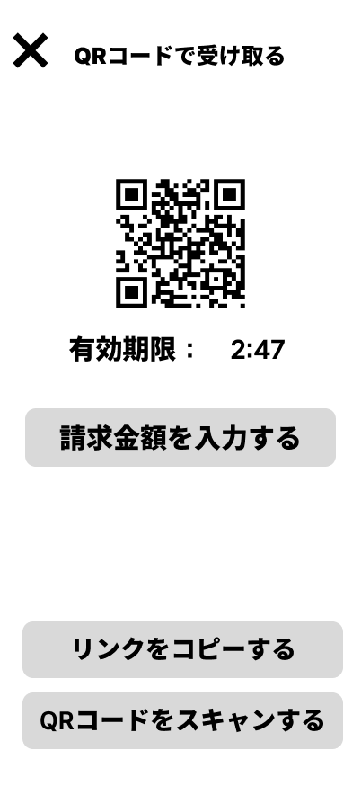
このままQRコードを相手に読み取ってもらうこともできます。また、受け取りたい金額を指定して相手に知らせることもできます。
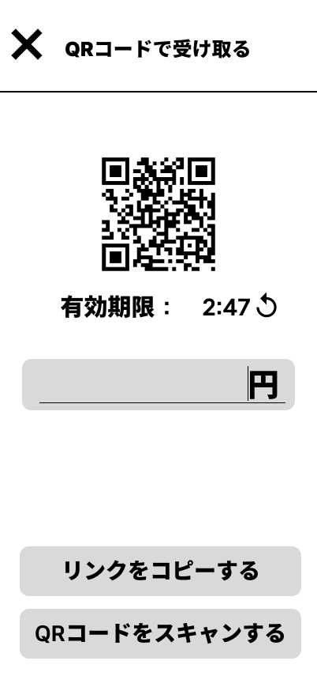
金額を入力すると、受け取り用のQRコード画面に指定した金額が表示されます。
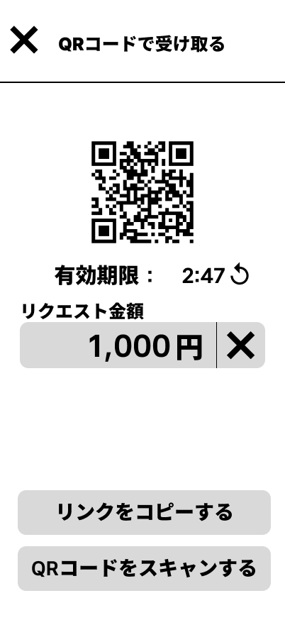
残高を受け取る操作の流れは、次のとおりです。
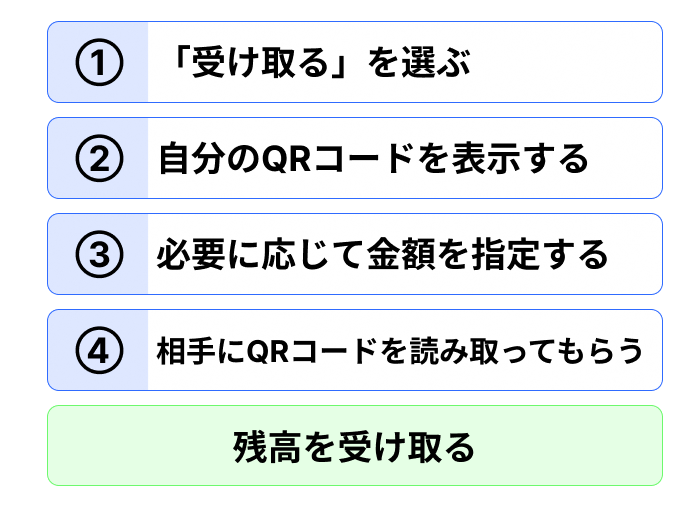
他の利用者から残高を受け取ると、受け取った金額が自分のスマホ決済アプリの残高に加わります。
たとえば、残高が1,000円のときに500円を受け取ると、その後の残高は1,500円になります。
ポイント
他の利用者へ残高を送ると、その金額の分だけ自分の残高が変化します。一方、他の利用者から残高を受け取ると、受け取った金額が自分の残高に加わります。